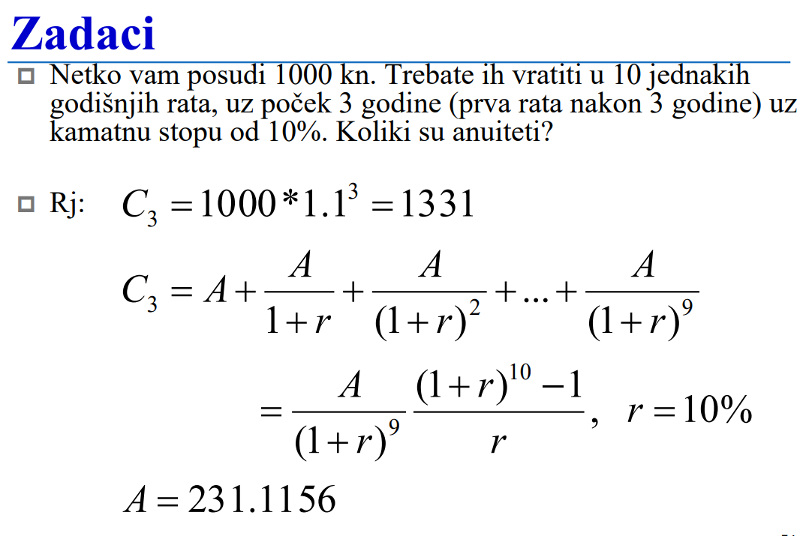
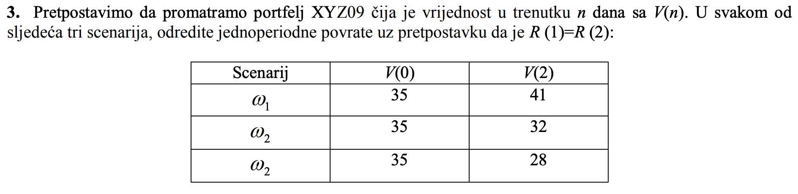

Dima ima na githubu predmeta https://github.com/studosi-fer/FINMAT/blob/master/vjezba/zzv/2016-17/FINMAT_2016-17_zzv_1.pdf
ima netko postupke za zadatke uz 5. prezentaciju? na githubu nema potpuno
Jesmo preskočili obradu arbitraže, u snimljenim predavanjima nemogu pronaći gdje se objašnjava
Dima nismo preskočili nego je profa prvo obradila duraciju i 5. prezu pa se vratila na arbitražu, u zadnjem predavanju ti je
zna li netko objasniti što se događa u zadatku 6 iz trecih zzv?
Jel ima netko rijesene 5 zzv?
Zna li netko u ZZV2 3. zadatak? Zašto je u njihovim rješenjima uopće formula za vječnu rentu, ako zadatak ne kaže da je vječna renta? Koja je onda konačna vrijednost ulaganja?
Na 54. stranici prve prezentacije dobijam anuitet od 196.92 kad uvrstim u kalkulator po njihovoj formuli, a oni daju odgovor 231.11?? Jel netko zna o čemu se radi 
a_ko_si_ti mislim da su krivo dobili jer i meni ispada tako
b) Prodaje li se obveznica po većoj ili manjoj cijeni od nominalne vrijednosti? Zašto? (Rj: kuponska stopa < trenutna prinos < prinos do dospijeća, dakle obveznica se prodaje po cijeni manjoj od nominalne.)
Može netko objasniti njihovo riješenje?
Sta je onaj BRKS iz 8. prezentacije?
a_ko_si_ti Bezrizicna kamatna stopa

U rjesenjima racunaju kao da je zadano V(1) a ne V(0), jeli to greska? Zar ne bi trebalo preko V(2)=V(0)(1+R1)2 racunat R1 tj R2? (ZZV 7. 3.zdk)
Dima isto se pitam, tako sam i ja ko ti, pretpostavljam da je greska, osim ako ovo “jednoperiodni” povrat znaci da je kao ukupni za oba perioda, dakle R(0, 2)? Ali onda nema smisla uopce zadavat R1 = R2. Netko tko bolje zna teoriju mozda zna.
Dima
Fico35 Ako nekog još zanima, u ovom slučaju se R(2) gleda kao R(0,2) pa vrijedi:
V(2)=V(0)(1+R(2))
R(2) nije jednoperiodni povrat u nekom općenitom slučaju, ali u zadatku je zadano R(1)=R(2) pa je dovoljno izračunati R(2) da bi dobili jednoperiodni povrat.
Fico35 Meni isto ima smisla računati preko (1+R1)2 ali nekako mi je sumnjivo da to nitko nije ispravio već 4 godine
tonkec Od kuda taj info? Vidim u starim ZI da ih je bilo, i konzultacije od prošle godine spominju cijeli semestar. EDIT: isprike za konzultacije, nije bilo MI prosle godine